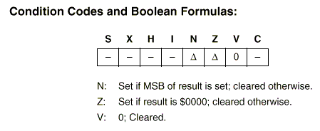
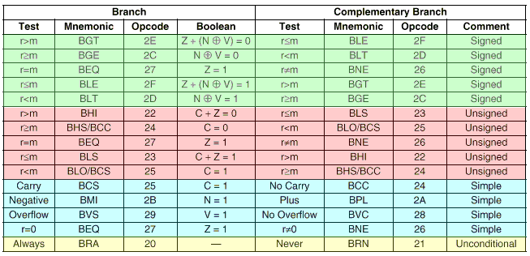

| Previous Section | Next Section | Index | Questions | Search the Text |
This section is split among several pages because of its length. The start of split sections have a table of contents showing each page and the contents of the current page. The current page is emphasized in bold.
Control structures affect the ordering of instruction execution. There are four basic control structures in programming: sequential, iterative, selection, and modular. So far we have seen the sequential control structure, which is to execute instructions in sequence. This can be considered the default control structure. The modular control structure is handled with subroutines, which will be discussed in a later section. The iterative control structure allows an instruction (or sequence of instructions using the sequential control structure) to be executed repeatedly. This is commonly called a program loop. The selection structure allows program alternatives. Both the iterative and selection structures require an instruction that alters program flow. These are called jump or branch instructions. In most cases, the branching must be conditional. The branch is taken only if some condition is true, and if the condition is not true, execution continues sequentially.
All conditional branching is based on condition codes, bits which are within the condition code register, or CCR. Different instructions alter different combinations of bits, depending on the result of the instruction. A conditional branch instruction can branch on various combinations of condition code bits. It is important to remember that the last instruction to alter a particular condition code bit determines the result of a conditional branch (branch taken or not taken). This may or may not be the last instruction executed.
Of the eight bits in the condition code register, four are used for conditional branching.
To be certain which condition code bits are altered by an instruction, it is a good idea to check the S12CPUV2 Reference Manual. Each instruction has the following table in its description:

The triangle symbol indicates that the particular condition code is altered based on the result of the instruction execution. A specific value (0 or 1) indicates the code is set or cleared. The dashes indicate the bit is not altered. The text explains how the new value is determined.
There are 16 conditional branch instructions. The best way to understand them is to look at any of them in the Users Guide and examine the branch table:

The table has been colored to emphasize that there are four groups of instructions, for each of signed and unsigned comparison, "simple" branch conditions, and unconditional. All of these branch instructions use PC relative addressing and allow branching to targets in the range -128 to +127 bytes from the end of the instruction.
The Unconditional branches are special in that the condition codes are not examined. The bra instruction always takes the branch. It is used instead of the more general jmp (Jump) instruction when the branch target is within the range of a conditional branch to save an instruction byte. An unconditional branch is used to specify the location of the next instruction if it is not the next sequential instruction.
The brn instruction never branches. It is a two byte long no-op (No Operation) instruction. There is also a single byte no-op instruction, called nop. These instructions are used primarily for time delay.
There is a capability of the jmp instruction which the bra instruction does not have, and that is choice of addressing modes. While the bra (and lbra described below) have only relative addressing mode, extended and all indexed modes are available for jmp. The branch target for jmp is the effective address of the operand, so, for example, jmp 0,X can be used to jump to the location specified in index register X.
The Signed and Unsigned conditional branches are used after compare or subtract instructions and allow branching based on comparing the value in the register with the one in memory. In the case of the sba and cba instructions, the contents of accumulator B is treated like the "memory" operand. Both the signed and unsigned instructions offer the same set of 10 comparisons, providing every relational operation. It is important to use the correct set of instructions depending on the data being signed or unsigned. Examples:
cmpa #$10 ; Compare contents of accumulator A, with #$10
bge t1 ; Branch to t1 if A>=$10. This assumes A is signed:
; A = $11, branch taken A = $10, branch taken
; A = $0f, branch not taken A = $ff, branch not taken
bhs t2 ; Branch to t2 if A>=$10. This assumes A is unsigned:
; A = $11, branch taken A = $10, branch taken
; A = $0f, branch not taken A = $ff, branch TAKEN
cpx ABC ; Compare contents of index register X contents of word ABC
beq t3 ; Branch if X = (ABC) Test is same for signed or unsigned
bhi t6 ; Branch if X > (ABC). Value in X and at ABC are unsigned
cmpb #0 ; Compare contents of accumulator B with zero
blt t4 ; Branch to t4 if B < 0. Certainly, B must be unsigned!
blo t5 ; Branch to t5 if B < 0. An unsigned comparison is being
; used - this doesn't make any sense, and in fact the
; branch will never be taken because B can't be less than
; zero if it is an unsigned value
The Simple conditional branches are "simple" only in that they are based on testing a single condition code bit, one of the C, N, V, or Z bits, for being 0 or 1.
Bvs and bvc will branch on the V bit being 1 or 0, respectively. They provide a way to test and branch based on the occurrence of overflow in a signed addition or subtraction, or any division instruction except for idiv.
Bcs and bcc will branch on the C bit being 1 or 0, respectively. The carry bit indicates overflow of unsigned addition, subtraction, and left shift operations, as well as being used for multi-precision addition, subtraction, and shifting.
Bmi and bpl will branch on the N bit being 1 or 0, respectively. The N bit is set based on the sign bit of a load, store, tab, tba, arithmetic (except inx/dex/iny/dey) or logical instruction. The negative bit indicates that a signed value is negative, or that the most significant bit of an unsigned or logical value is 1. Note that bpl is a branch based on the value being non-negative, and not positive. However since these instructions will set all of the condition code bits N, Z, and V, all of the branch conditions for signed comparisons are available and behave as though the result of the condition code setting instruction was compared with zero. This means that bgt can be used to branch on the signed value being greater than zero.
Beq and bne will branch on the Z bit being 1 or 0, respectively. The Z bit is set based on the result being zero in a load, store, tab or tba, arithmetic (including inx/dex/iny/dey) or logical instruction.
How can one do a conditional branch when the branch target is out of range? The traditional solution involved changing the branch condition to its complement, and branch around a jump instruction which goes to the intended branch target. For an example, say that target t1 in the following example is out of range:
cpx ABC ;
bhi t1 ; branch to t1 if (X) > (ABC), unsigned
The complement of bhi is bls (as seen in the table), so we can do the following:
cpx ABC ;
bls b1 ; branch around jump if (X) <= (ABC)
jmp t1 ; jump to t1 if (X) > (ABC)
b1:
There is a better solution in the 68HC12, and that is to use the long branch instructions. The long branch instructions work identically to the traditional branch instructions except they can branch to any location within 32k bytes. Considering the addressing is modulo 64k, this allows branching to any location. The downside is that the instructions are two bytes longer, take an extra cycle if the branch is taken, and take two extra cycles if the branch is not taken. Use these instructions only if they are really necessary, and particularly note that there is never any reason to use the unconditional long branch, lbra, instead of the smaller and faster jmp. Here is the table of long branch instructions, from the reference manual. This table gives the instruction names as well as the mnemonics:
|
|
When using a high level language, such as C, branching is always based on a comparison operation. It is not possible to branch on the result of an arithmetic operation, such as a branch on overflow. On the other hand, the high level language will always pick the correct (signed or unsigned) compare operation, and is capable of comparing values of different types and sizes because it will convert data as necessary. In general, programs which have many branching operations are much easier to write and read in a high level language, and have much less chance of error than those written using an assembler.
Selecting the correct branch operation can be a confusing task. The following summary should be helpful:
Continue with Iteration Examples.
Return to the Index.